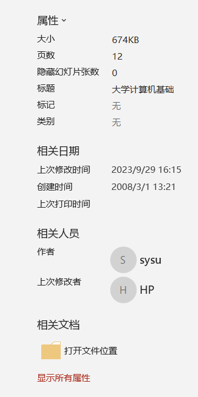
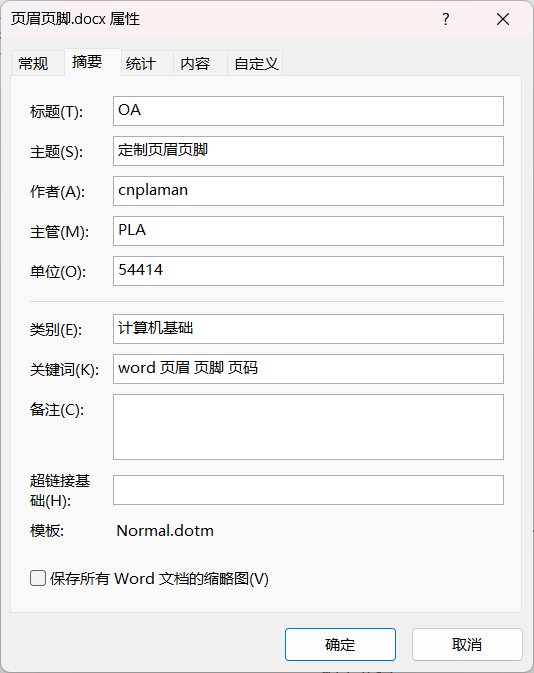

文件
File
教学实施
- 打开应用程序
-
. 桌面快捷方式[]. 开始菜单 → 程序列表. 开始菜单 → 开始屏幕. 任务栏. 任务视图
-
随系统版本有所变化
- 创建 New | Ctrl+N
- . 创建一个新的空白文档
- . 还可以在桌面 Desktop或资源管理器 Explorer中，右键鼠标 → 新建 → 对应的文件类型
- 保存 Save | Ctrl+S
- . 保存所做的编辑
- . 第一次保存，会提示用户指定保存路径和文件名
- . 每次新建文档都应该立即保存[]
- . 编辑过程中，应经常保存
-
在"选项" → "保存"中设置自动保存=lorem()：快速生成3段英文占位符|假文；也可以指定段数，如=lorem(2)；视系统而定=rand(n,m)：快速生成n段m行的中文占位符|假文；视系统而定
- 打开 Open | Ctrl+O
- . 使用程序打开历史文档
- . Office会保存一定数量的历史文件，供用户快速选择以便再次编辑
- . 在程序外，使用双击文件或将文件拖到程序图标上可以快速打开[]
- 信息 Information
- . 添加开发者信息，如作者、单位等属性信息；这些信息可以作为文档的一部分插入到页眉或页脚中
- . 保护文档；如果设置了密码，请妥善保管
-
 文档属性  文档属性 - 打印 Print | Ctrl+P
- . 根据页面的设置打印文档
- . 可随时调整页面设置；还可以在"布局"中设置页面
- 导出 Export
- . 考虑到版本的差异，如果已经定稿或不想被修改，应尽量导出为PDF格式，可以最大程度的保存文档样式
- 关闭 Close | Alt+F4
- . 关闭当前编辑的文档
- . 如果没有保存，会提示请保存操作或放弃等信息
- 选项 Option
- . 对程序的设置，如自动保存、字体使用、自定义使用等等
-
1. 保存. 共享文档时保留保真度 - 将字体嵌入文件
-
2. 高级图片大小和质量